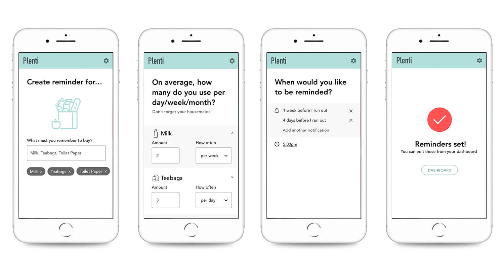

Our first project at General Assembly was an open brief to familiarise us with the UX process with more focus on definition and development.
Through interviews, I discovered that my friend Holly gets very frustrated when she runs out of Nespresso Coffee pods.
Through a storyboard and experience map I identified the target pain point to focus on: the moment Holly forgets to buy more coffee pods.
I designed an app to calculate the use of Holly’s household essentials and automatically set reminders to buy them when stock was low.
 Read Full Case StudyTo uncover pain points in Holly's routine.
To visualise Holly's frustration and define the experience map.
Solve the first low point and the rest of the experience doesn't occur.
To assess the viability and usability of the prototype.
To test redesigns with users and present the concept.
Developing a brand identity for a new product.